FP&A 핸드오프 차트 — 렌더 검증 갤러리 (12종)
Excel↔슬라이드 패리티 보완. 각 차트 = JS/SVG 렌더러 + 데모 슬라이드 렌더 스크린샷. 메인 세션이 육안 검증한 통과본만 등록.
A. 1차 — 핵심 핸드오프 4종
1 · Bullet chart ✓
실적 vs 목표 vs 평가구간. KPI 스코어카드·보드팩. (bullet.js)
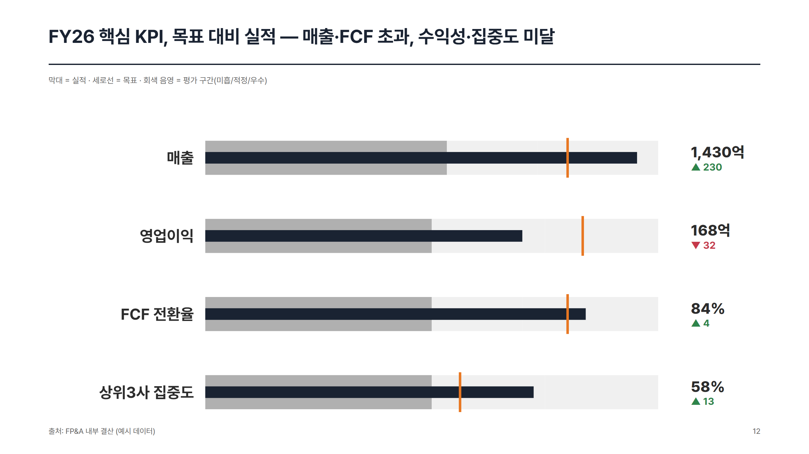
2 · Tornado (민감도) ✓
변수별 결과 변동폭 발산막대, swing 내림차순. (tornado.js)
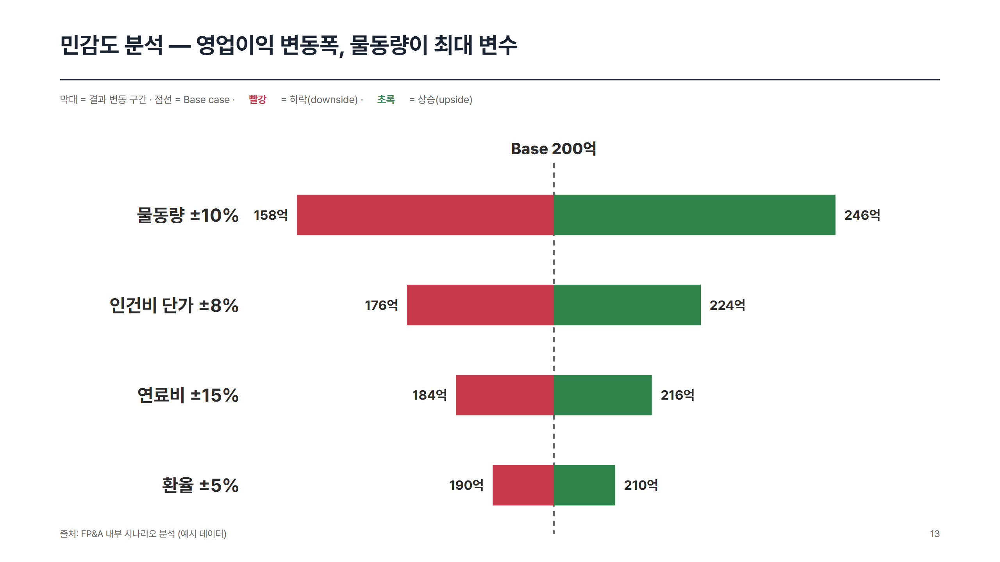
3 · PVM Bridge ✓
가격·물량·믹스 3요인 분해 폭포. (pvm-bridge.js)
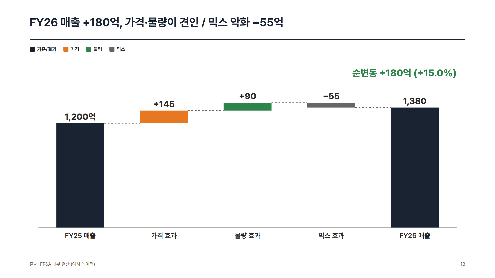
4 · Cohort Heatmap ✓
코호트별 잔존율 그리드, 연속 색보간. (cohort-heatmap.js)
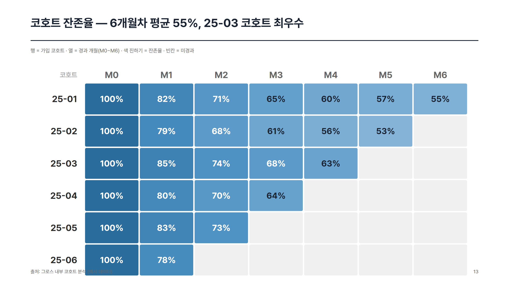
B. 2차 — 자문 발견 커버리지 보완 8종
5 · Combo (dual-axis) ✓
매출막대 + 마진%선, 좌우 독립축. FP&A 최빈. (combo.js)
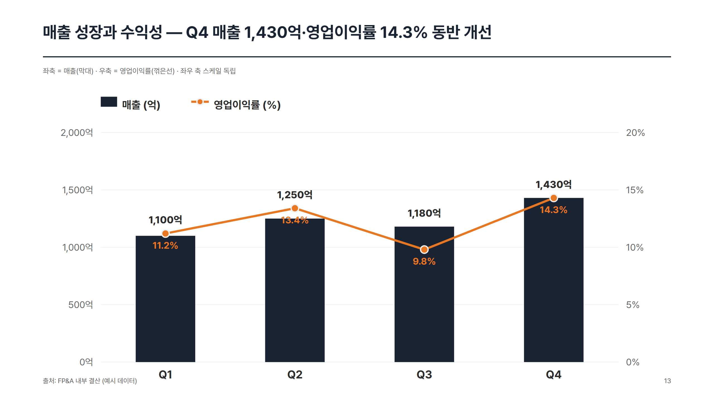
6 · Driver Tree ✓
ROIC=수익성×자산회전 등 수식 분해 트리. (driver-tree.js)
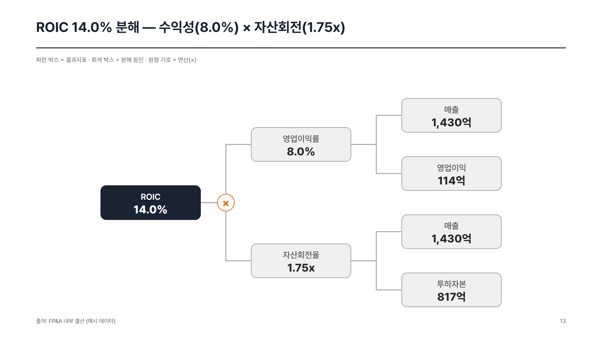
7 · Scatter ✓
조업도×원가 상관 + 회귀 추세선. (scatter.js)
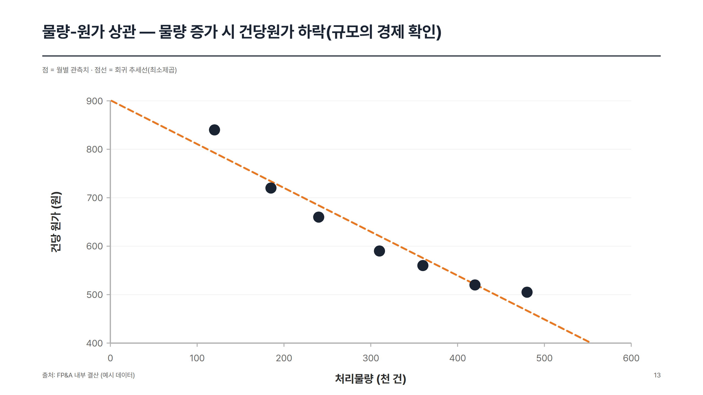
8 · Scenario Summary ✓
Base/Up/Down 시나리오별 KPI 결과 비교. (scenario-summary.js)
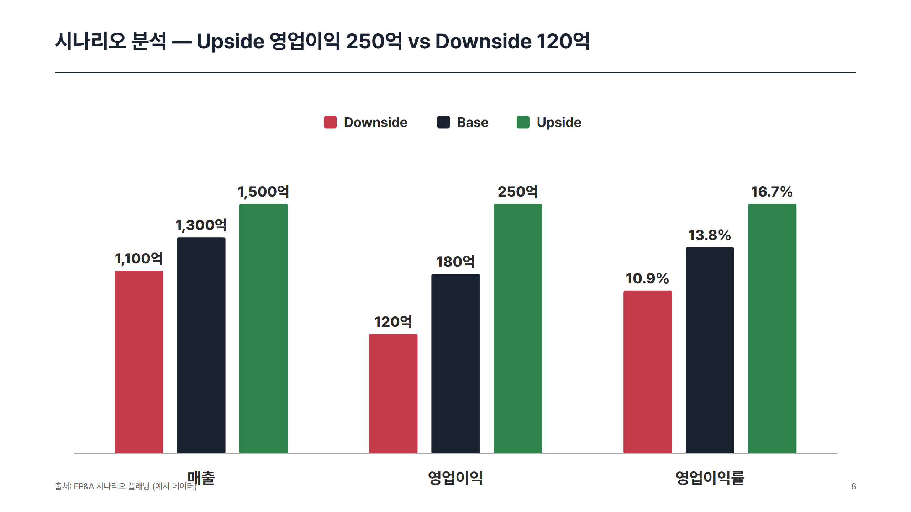
9 · Overlapping Line (계절성) ✓
연도별 선 겹쳐 계절 패턴 비교. (overlapping-line.js)
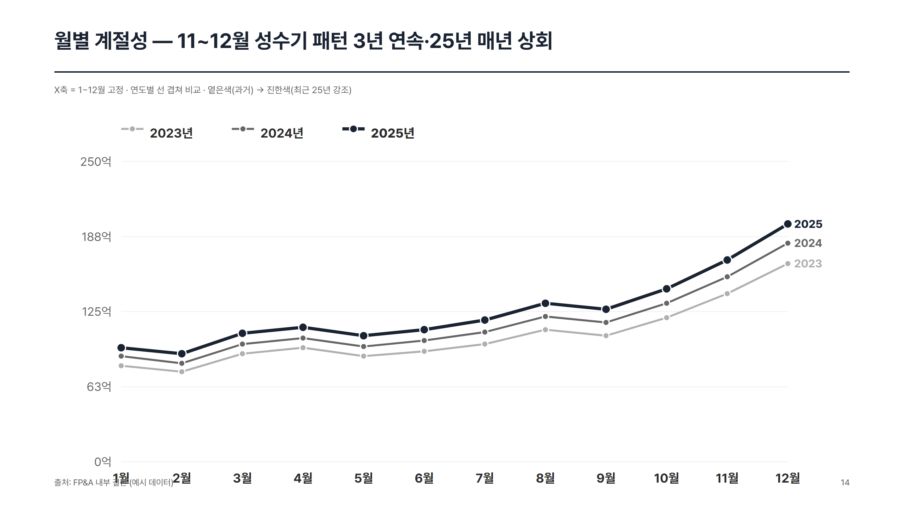
10 · Heatmap (범용 발산) ✓
부서×월 변동률, 음수빨강·양수초록. (heatmap.js)
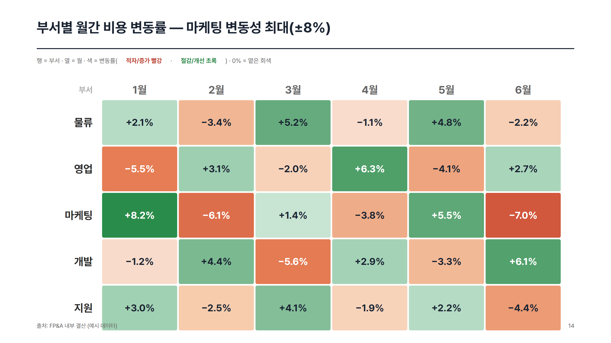
11 · Treemap ✓
비용 구성 면적 분할(squarified). (treemap.js)
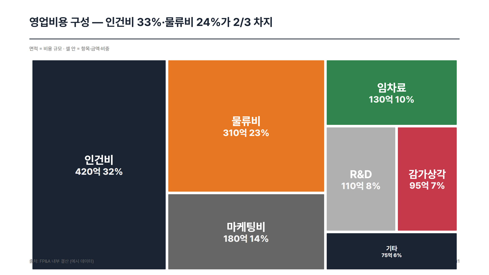
12 · Breakeven (CVP) ✓
매출·총비용선 교차 손익분기점. (breakeven.js)
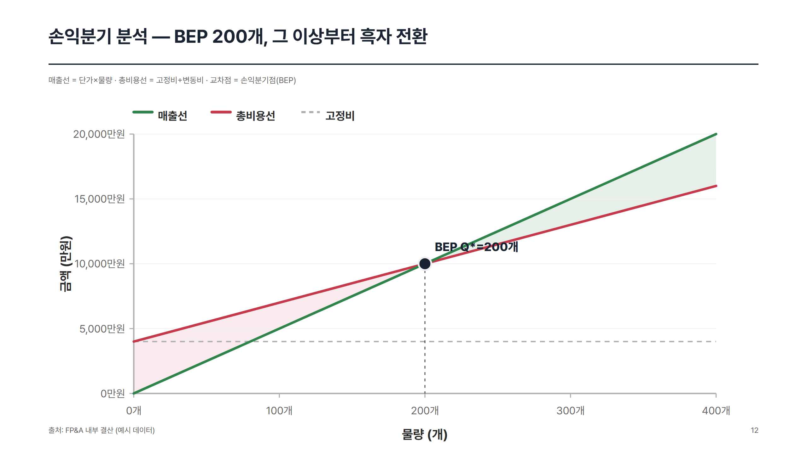